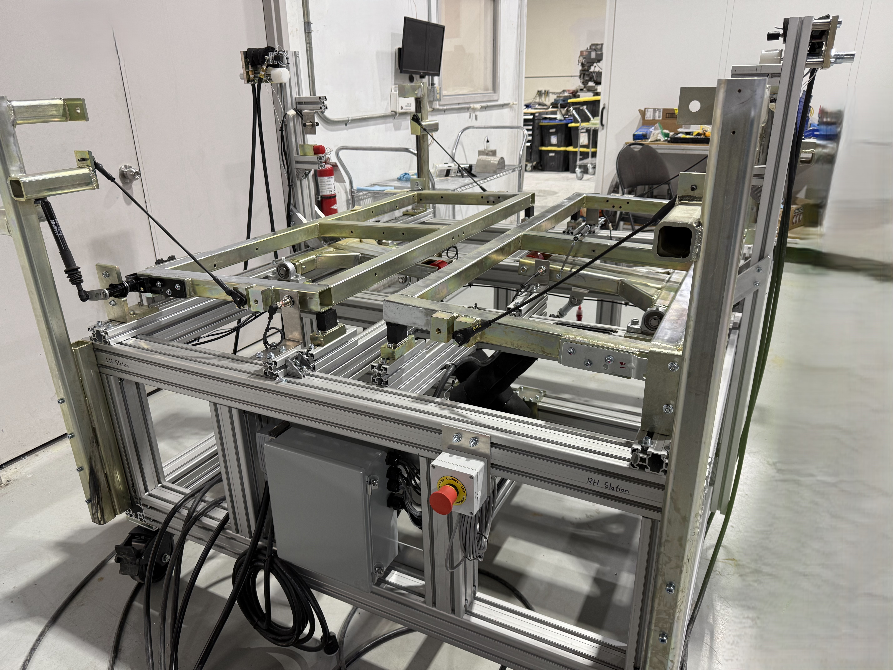
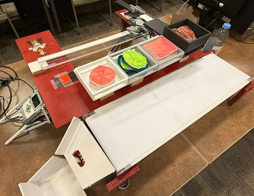
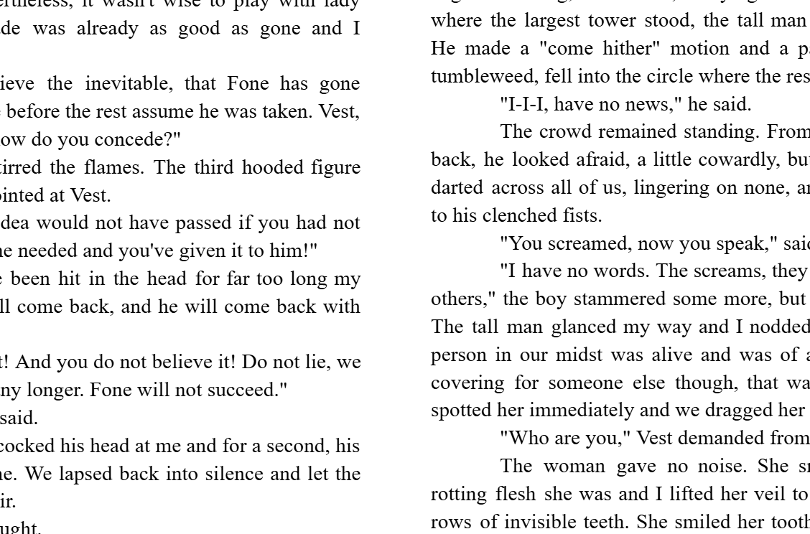

I'm a mechanical engineering student whose interests lie in additive manufacturing, design prototyping, and the areas where imaginative engineering intersects with physical storytelling.
Explore My WorkAs a second year student at the University of Waterloo, I've had past co-ops and experiences that have lead me to discover from an engineering standpoint, the importance of reliable solutions in design, for operations, products, or services. My first two co-ops were in the automotive industry, working test and validation for outside hinges and interior hose lines. Most recently, my research position in an additive manufacturing lab allowed me to express the rigorous process of designing an experiment, documenting data, and obtaining meaningful results.
From my experiences, I've gained valuable skills in all forms of 3d-printing, especially in SLA, CAD and programming abilities, and general machining literacy. I've also gained important insights into automotive manufacturing processes such as to optmize operations and production. I also enjoy writing short stories and playing board games.
Program: Mechanical Engineering
School: University of Waterloo
Interests: Additive Manufacturing, Surface Modelling, Creative Writing
Tools: SolidWorks, Python, SLA printing
Choose any of my avenues of work to look further into.

Projects I've worked on and completed in the aspects of automotive testing and design and additive manufacturing research.
Explore projects →
Anything engineering related I have completed in regards to school and personal works.
Explore projects →
A collection of the short stories I have finished.
Explore stories →Feel free to reach and get in touch!